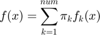
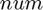
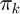
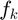
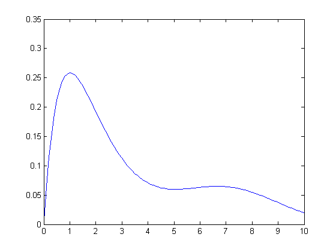

mixturefactory
Construct a mixture distribution structure
Syntax
D = mixturefactory(ComponentD, num) D = mixturefactory(ComponentD)
Description
D = mixturefactory(ComponentD, num) returns a structure representing a mixture distribution. ComponentD is a distribution structure defining mixture component distribution type, and num is the number of mixture components.
D = mixturefactory(ComponentD) where ComponentD is a cell array of distribution structures defined on the same data space, constructs a heterogeneous mixture distribution D where each component may be of a different distribution type.
Distribution Parameters
- D (num-by-1 cell array of distribution parameter structures) : Contains the parameters for each component.
- p (num-by-1 vector) : The vector of component weights.
Probability Density Function
The distribution has the following density:

where  is the number of components,  is the weight for the k-th component, and  represents the density function for the k-th component.
Example 1
% Construct a mixture of three bivariate normal distributions: D = mixturefactory(mvnfactory(2), 3); % Build a parameter structure for it: theta.D{1} = struct('mu', [3; -1], 'sigma', [2 1; 3 4]); theta.D{2} = struct('mu', [0; 3], 'sigma', [3 0; 0 4]); theta.D{3} = struct('mu', [-4; -1], 'sigma', [4 0; 0 3]); theta.p = [0.4; 0.3; 0.3]; % Plot the PDF: x = -10:0.2:10; y = -10:0.2:10; [X, Y] = meshgrid(x, y); data = [X(:) Y(:)]'; f = D.pdf(theta, data); surf(X, Y, reshape(f, size(X)));

Example 2
% Construct a heterogeneous mixture distribution % containing a gamma and a Gaussian component: D = mixturefactory({gammafactory(); mvnfactory(1)}); % Build a parameter structure for it: theta.D{1} = struct('a', 2, 'b', 1); theta.D{2} = struct('mu', 7, 'sigma', 4); theta.p = [0.7; 0.3]; % Plot the PDF: x = 0:0.1:10; plot(x, D.pdf(theta, x))

name
See distribution structure common members.
Flag to control the memory usage (resulting code will be slower)
M
See distribution structure common members.
num
Number of components (excluding any fixed components)
Syntax
num = D.num()
Description
num = D.num() returns the number of components in the mixture D. When some components are fixed, only the number of variable components is returned.
Note: You need to include the parentheses () for this to work.
numfixed
Number of fixed components
Syntax
numfixed = D.numfixed()
Description
numfixed = D.numfixed() returns the number of fixed components in the mixture D.
Note: You need to include the parentheses () for this to work.
numtotal
Total number of components
Syntax
numtotal = D.numtotal()
Description
numtotal = D.numtotal() returns the total number of components (variable and fixed) in the mixture D.
Note: You need to include the parentheses () for this to work.
nump
Number of elements in the component weight vector (theta.p)
Syntax
nump = D.nump()
Description
nump = D.nump() returns the number of elements in the component weight vector in the parameters for the mixture D. When there are no fixed components, this is the same as the number of mixture components. When some components are fixed, nump equals the number of variable components plus one, since in addition to the weights for the variable components, we store another weight which can scale the weights of the fixed components uniformly.
Note: You need to include the parentheses () for this to work.
component
Component distributions
Syntax
D_k = D.component(idx)
Description
D_k = D.component(idx) where idx is the index of a component, gives the component distribution structure at idx.
D_k = D.component(idx) where idx is an index vector with more than one element, returns a cell array of the distribution structures indexed in idx.
Valid range for the indices is from 1 to D.numtotal().
varD
Variable component distributions
Syntax
varD_k = D.varD(idx)
Description
varD_k = D.varD(idx) where idx is the index of a variable component, gives the variable component distribution structure at idx.
varD_k = D.varD(idx) where idx is an index vector with more than one element, returns a cell array of the variable distribution structures indexed in idx.
Valid range for the indices is from 1 to D.num().
fixedD
Fixed component distributions
Syntax
fixedD_k = D.fixedD(idx)
Description
fixedD_k = D.fixedD(idx) where idx is the index of a fixed component, gives the fixed component distribution structure at idx.
fixedD_k = D.fixedD(idx) where idx is an index vector with more than one element, returns a cell array of the fixed distribution structures indexed in idx.
Valid range for the indices is from 1 to D.numfixed().
fixedparam
Parameters stored for the fixed components
Syntax
fixedtheta = D.fixedparam()
Description
fixedtheta = D.fixedparam() returns the parameter structure stored for the fixed components in the mixture D. The number of elements in fixedtheta.D and fixedtheta.p equals D.numfixed().
Note: You need to include the parentheses () for this to work.
subparam
Extract a subset of component parameters
Syntax
subtheta = D.subparam(theta, idx)
Description
subtheta = D.subparam(theta, idx) returns the mixture parameter structure subtheta containing the parameters for the subset of components indexed by idx, from theta. An additional weight is added to subtheta.p to make the sum of the weights equal to one.
When some components are fixed, you can pass indices from D.num() + 1 to D.num() + D.numfixed(), to refer to fixed components.
fullparam
Get the parameters for the entire mixture, given variable component parameters
Syntax
fulltheta = D.fullparam(theta)
Description
fulltheta = D.fullparam(theta) can be used when some components are fixed, to obtain the parameters for all the components, given the partial parameters theta corresponding to the variable components.
addcomponent
Add a mixture component (to the variable components)
Syntax
newD = D.addcomponent(CmptD) [newD, newtheta] = D.addcomponent(CmptD, theta, CmptTheta)
Description
newD = D.addcomponent(CmptD) returns newD, a mixture distribution with the same components as D plus the new variable component distribution CmptD.
[newD, newtheta] = D.addcomponent(CmptD, theta, CmptTheta) also returns newtheta, the parameters for newD, given theta, the parameters for D, and CmptTheta, the parameters for CmptD.
removecomponent
Remove a component
Syntax
newD = D.removecomponent(idx) [newD, newtheta] = D.removecomponent(idx, theta)
Description
newD = D.removecomponent(idx) returns newD, a mixture distribution the same as D where the component at index idx is removed from its components.
[newD, newtheta] = D.removecomponent(idx, theta) also returns newtheta, the parameters for newD, given theta, the parameters for D.
invertindex
Obtain an inverted component index vector (Find the other components)
Syntax
invidx = D.invertindex(idx)
invidx = D.invertindex(idx, 'fixed')
Description
invidx = D.invertindex(idx) returns the indices of the variable components other than those indexed in idx.
invidx = D.invertindex(idx, 'fixed') returns the indices of the fixed components other than those indexed in idx.
fixate
Make some variable component(s) fixed
Syntax
newD = D.fixate(idx, theta) [newD, theta] = D.fixate(idx, theta) [newD, theta] = D.fixate(idx, theta, data) [newD, theta, idxFixed] = D.fixate(...) [newD, theta, idxFixed, idxMap] = D.fixate(...)
unfix
Make some fixed component(s) variable
Syntax
newD = D.unfix(idx) [newD, theta] = D.unfix(idx, idxFixated, theta) [newD, theta] = D.unfix(idx, idxFixated, theta, data) [newD, theta, idxUnfixed] = D.unfix(...) [newD, theta, idxUnfixed, idxMap] = D.unfix(...)
splitinit
Calculate the initial parameters for two splitted mixture components to be substituted for the given component.
Syntax
theta = D.splitinit(idx, theta) theta = D.splitinit(idx, theta, options) theta = D.splitinit(idx, theta, options, data) [theta, store] = D.splitinit(idx, theta, options, data, store)
split
Split a variable component in two
Syntax
newD = D.split(idx) [newD, newtheta] = D.split(idx, theta) [newD, newtheta] = D.split(idx, theta, options) [newD, newtheta] = D.split(idx, theta, options, data) [newD, newtheta, idxSplitted, idxMap] = D.split(...) [newD, newtheta, idxSplitted, idxMap, store] = D.split(idx, theta, options, data, store)
mergeinit
Calculate the initial parameters for a merged mixture component to be substituted for two given components.
Syntax
theta = D.mergeinit(idx1, idx2, theta) theta = D.mergeinit(idx1, idx2, theta, options) theta = D.mergeinit(idx1, idx2, theta, options, data) [theta, store] = D.mergeinit(idx1, idx2, theta, options, data, store)
merge
Merge two variable components into one
Syntax
newD = D.merge(idx1, idx2) [newD, newtheta] = D.merge(idx1, idx2, theta) [newD, newtheta] = D.merge(idx1, idx2, theta, options) [newD, newtheta] = D.merge(idx1, idx2, theta, options, data) [newD, newtheta, idxMerged, idxMap] = D.merge(...) [newD, newtheta, idxMerged, idxMap, store] = D.merge(idx1, idx2, theta, options, data, store)
splitcandidates
Find split candidates
Syntax
idx = D.splitcandidates(theta, data) idx = D.splitcandidates(theta, data, options) idx = D.splitcandidates(theta, data, options, n)
mergecandidates
Find merge candidates
Syntax
[idx1, idx2] = D.mergecandidates(theta, data) [idx1, idx2] = D.mergecandidates(theta, data, options) [idx1, idx2] = D.mergecandidates(theta, data, options, n)
dim
See distribution structure common members.
datadim
See distribution structure common members.
weighting
Calculate the weighting (posterior probability) of each data point in relation to each mixture component
Syntax
component_weights = D.weighting(theta, data) [component_weights, store] = D.weighting(theta, data, store)
ll
See distribution structure common members.
llvec
See distribution structure common members.
llgrad
See distribution structure common members.
regcost
Regularizer cost
Syntax
reg = regcost(theta, data) [reg, store] = regcost(theta, data, store)
reggrad
Regularizer gradient with respect to parameters
Syntax
dll = reggrad(theta, data) [dll, store] = reggrad(theta, data, store)
llgraddata
See distribution structure common members.
cdf
See distribution structure common members.
gaussianize
See distribution structure common members.
sample
See distribution structure common members.
You can also get the component labels for each data point using the following syntax:
[data, label] = D.sample(...)
randparam
See distribution structure common members.
init
See distribution structure common members.
estimatedefault
Default estimation function for mixture distribution. This function implements the expectation maximization (EM) method.
Syntax
theta = D.estimatedefault(data) theta = D.estimatedefault(data, options) [theta, D] = D.estimatedefault(...) [theta, D, info] = D.estimatedefault(...) [theta, D, info, options] = D.estimatedefault(...)
Description
theta = D.estimatedefault(data) returns estimated parameters for the distribution D, using data.
theta = D.estimatedefault(data, options) utilizes applicable options from the options structure in the estimation procedure.
[theta, D] = D.estimatedefault(...) also returns D, the distribution structure for which theta is applicable. (This is the same as the distribution structure D from which you called estimate, and so it should not normally be used. The purpose of including it in the output is to maintain compatibility with other estimation functions).
[theta, D, info] = D.estimatedefault(...) also returns info, a structure array containing information about successive iterations performed by iterative estimation functions.
[theta, D, info, options] = D.estimatedefault(...) also returns the effective options used, so you can see what default values the function used on top of the options you possibly specified.
For information about the output theta, see Distribution Parameters Structure. The input argument data is described in Data Input Argument to Functions. You may also want to read about options or info arguments.
Available Options
This function supports the following options from the options described in estimation options.
- theta0
- verbosity
- plotCost
- crossVal
- minIter
- maxIter
- maxTime
- tolCost
- tolCostDiff
- statsfun
- stopfun
Returned info fields
This function puts the following fields in the returned info structure array. You can read more about them in our documentation on estimation statistics structure.
- iter
- cost
- time
- cvCost
Example
% create a mixture of two Gaussian distributions D = mixturefactory(mvnfactory(1), 2); % generate 1000 random data points data = [randn(1,300).*2-5, randn(1,700).*3+10]; % use an appropriate theta0 options.theta0 = D.init(data); % estimate mixture parameters using the EM algorithm theta = D.estimatedefault(data, options)
estimatepartial
Estimate parameters for a subset of components, while fixing the others
Syntax
newtheta = D.estimatepartial(idx, theta, data) newtheta = D.estimatepartial(idx, theta, data, options) [newtheta, newD] = D.estimatepartial(...) [newtheta, newD, info] = D.estimatepartial(...) [newtheta, newD, info, options] = D.estimatepartial(...)
Note: options.theta0 is ignored and the given theta is used as the initial point.
penalizerparam
See distribution structure common members.
Penalizer Info
The default penalizer for the mixture distribution is the sum of the default penalizers of its components.
penalizercost
See distribution structure common members.
penalizergrad
See distribution structure common members.
sumparam
See distribution structure common members.
scaleparam
See distribution structure common members.
sumgrad
See distribution structure common members.
scalegrad
See distribution structure common members.
entropy
See distribution structure common members.
kl
See distribution structure common members.
AICc
See distribution structure common members.
BIC
See distribution structure common members.
MML
Calculate minimum message length information criterion
Syntax
mml = D.MML(theta, data) [mml, gradMML] = D.MML(theta, data)
BICm
Calculate modified Bayesian information criterion
Syntax
bic = D.BICm(theta, data)
AICmc
Calculate modified corrected Akaike information criterion
Syntax
aicc = D.AICmc(theta, data) [aicc, gradAicc] = D.AICmc(theta, data)
display
See distribution structure common members.